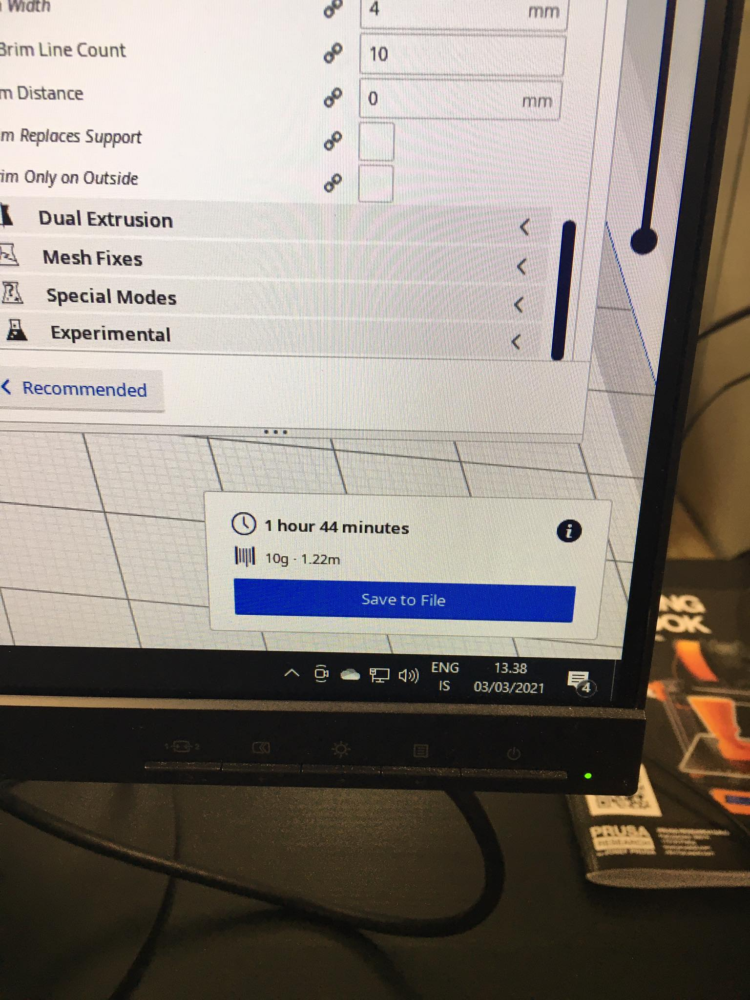

3D prentun og 3D skönnun
Fyrstu skrefin
Fyrst var að ákveða hönnun til þess að gera í þessu verkefni. Í verkefni 2 misheppnuðust tafl kallarnir aðeins og því var ákveðið að halda áfram með þá hugmynd og búa til tafl kalla.
Hönnunin sjálf
Eftir smá skoðun á aðstæðum þá var ekki hægt að búa til heilt tafl set og því var byrjað bara að hanna eitt svart peð. Ef tími gefst til þá verður búið til fleiri kalla.
Ákveðið var að teikna hlutinn upp í Fuusion 360. Það var ekki beint mjög flókið að teikna eitt peð í fusion en byrjað var að teikna það í 2D eins og sést hér fyrir neðan. Byrjað var að ákveða hversu hár kallinn ætti að vera og var ákveðið að hafa hann 60mm, við það var því teiknuð bein lína sem var 60mm. Því næst var þurfti að ákveða hversu stór botnin ætti að vera og ákveðið var að hafa hann þvermálið á kallinum 30mm þannig að hann gæti passað á taflborðið sem var gert í verkefni 2. Þá var teiknað aðra beina línu sem var 15mm frá botni hinnar línunnar. Nú var að búa til botninn sjálfan, þá hæð hans. Notað var skipun í fusion sem heitir "fit point spline" og best var að prófa sig bara áfram þangað til flott útkoma kom út. Næst var að hanna hausinn á peðinu, það var gert með því að búa til hring og ákveðið var að hafa radíus hringsins 9.5mm. Eina sem var eftir þá var að teikna línu frá hringnum niður í botninn. Þá var 2D teikningin í fusion tilbúin.
Nú var að setja peðið í 3D og besta leiðinn til þess að gera það miðað við 2D teikninguna okkar þá var það að nota skipun sem heitir "revolve" í fusion. Hér fyrir neðan má sjá mynd af skipuninni í notkun. En hún virkar þannig að þú þarft fyrst að velja svæði sem þú vilt rótera og svo velja ás og í okkar tilfelli þá er ásinn okkar beina línan sem ákvað hæð peðsins.

Hér má sjá loka útkomuna af peðinu.
Nú er bara að búa til STL file til þess að færa hönnunina yfir í Ultimaker Cura
Ultimaker Cura
Í þessu forriti gerðum við ýmsar stillingar við hönnunina okkar áður en við sendum hana í 3D prentun. Þessar stillingar voru ákveðnar út frá hópaverkefninu sem er hægt að sjá hér. Einnig má sjá hér fyrir neðan má sjá 3 myndir sem sýna þær stillingar sem voru teknar.
Hér má sjá ýmsar stillingar sem voru teknar en ákveðið var að hafa infill density 40% því það var ákveðið að hafa enga support við gerð hlutins. En það var eitt horn á hlutnum sem var alveg á mörkunum að þurfa support samkvæmt niðustöðum úr hópaverkefninu. En það var ákveðið að prófa þetta og því var densityið sett á 40% til þess að auka líkurnar á því að þessi prentun mundi heppnast. Einnig var gerður smá grunnur sem hönnunin var gerð á. Hér fyrir neðan má sjá mynd af því hvernig hönnunin lýtur út að innan.

Hönnunin tók 1 klukkutíma og 44 mínútur í prentun

Hér er mynd af 3D prentaranum vera prenta hönnunina.
Niðurstöður og hvað mætti fara betur
Hér má sjá hvernig útkoman af peðinu gekk.
Eins og sést þá er smá skekkja við hausinn á peðinu og það er út af því að helst þurfti smá stuðning við þann hluta af hönnunninni við prentun. Þannig það hefði mátt prenta hönnunina aftur með stuðningi. En annars er þetta nothæft peð til þess að nota í tafli.
3D skönnun
Notað var app í síma sem heitir Qlone til þess að gera 3D skönnun. Mér var ráðlegt að nota þetta app hjá nemanda sem er einnig í þessum áfanga. Fyrst sem þurfti að gera til að uppfylla skönnunina var að prenta út nokkurs skonar platform sem má sjá hér fyrir neðan.
Næst var að finna einhvern þæginlegan hlut og fundið var lítill playmo köttur. Sem litli bróðir minn á en engin sérstök ástæða af hverju hann var fyrir valinu heldur en einhver annar hlutur.
Nú var bara að byrja skönnunina. Það var sett köttinn á platformið og þurftum að taka upp í gegnum appið og rótera hlutnum til þess að appið mundi fá 360 sýni af hlutnum. Það þurfti að fara nokkra hringi í kringum hlutinn til þess að appið náði að gera allta kassana gegnsæa, eins og sést á myndinni. Best var bara að lyfta myndavélinni upp og niður og nota hina hendina til þess að snúa blaðinu rólega í hringi.
Þegar skönnuni var búinn var fengin þessi niðurstaða:
Eins og sést þá gekk þessi skönnun ekki alveg nóg og vel en það kom á óvart hversu vel appið náði að skala skottið á kettinum miðað við hvernig annað eyrað á honum fór. En ástæðan af hverju skönnunin gekk ekki alveg eins og planað gæti verið því að lýsingin var ekki næginlega góð og hluturinn er ekki mattur þannig hluturinn klansaði smá við lýsinguna. Það hefði getað haft áhrif á skönnunina. Best hefði örugglega verið að prófa annað leikfang frá brósa sem mundi ekki klansa svona í þessari lýsingu.
Hönnunarskjöl
Hér má finna öll skjöl sem ég notaði til þess að vinna þetta verkefni: Hönnunarskjöl
Tímaskráning
| Verkþáttur | Tími (klst.) |
|---|---|
| Finna hugmynd | 1 |
| Plana og teikna í fusion | 2 |
| Hópaverkefnið | 2 |
| Öll vinnan tengd Cura | 1 |
| Nota 3D prentar | 2 |
| 3D skönnun | 2 |
| Skjalagerð | 3 |